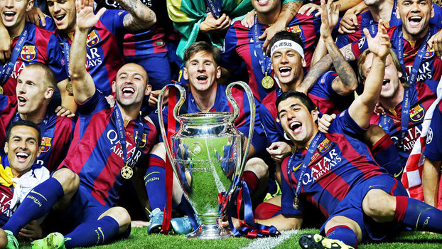
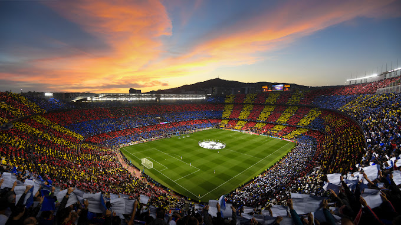

Títulos da UEFA Champions League: O Barcelona conquistou a UEFA Champions League em várias ocasiões, destacando-se como um dos clubes mais bem-sucedidos na história do torneio. Eles ganharam o título em 5 ocasiões até janeiro de 2022: 1991–92, 2005–06, 2008–09, 2010–11 e 2014–15. Participações regulares: O Barcelona é um dos clubes mais frequentes na fase de grupos da UEFA Champions League. Eles têm consistentemente se classificado para o torneio ao longo das últimas décadas devido ao seu sucesso em nível nacional na La Liga. Jogadores icônicos: Durante sua história na Champions League, o Barcelona contou com alguns dos maiores jogadores de futebol do mundo, como Lionel Messi, Xavi Hernández, Andrés Iniesta, Ronaldinho, entre outros. Estilo de jogo distintivo: O Barcelona é conhecido por seu estilo de jogo distintivo, baseado no famoso sistema de jogo de posse de bola conhecido como "tiki-taka". Esse estilo enfatiza a rápida troca de passes e o controle da posse de bola para desgastar os oponentes e criar oportunidades de gol. Clássicos memoráveis: Ao longo dos anos, o Barcelona participou de muitos jogos memoráveis na UEFA Champions League, incluindo vitórias emocionantes, reviravoltas dramáticas e confrontos épicos contra outros gigantes europeus. Desempenho recente: O desempenho do Barcelona na Champions League pode variar de temporada para temporada, dependendo dos jogadores em forma, da estratégia do treinador e de outros fatores. Até janeiro de 2022, o clube estava passando por uma transição após a saída de jogadores-chave como Lionel Messi e buscava redefinir sua identidade e competitividade na competição.
Lionel Messi: Considerado um dos maiores jogadores de todos os tempos, Messi teve um papel fundamental em várias conquistas do Barcelona na Champions League. Sua habilidade extraordinária, visão de jogo e capacidade de marcar gols decisivos foram cruciais para o sucesso da equipe.
Xavi Hernández: Xavi foi o maestro do meio-campo do Barcelona durante muitos anos. Sua precisão nos passes, inteligência tática e capacidade de controlar o ritmo do jogo foram elementos-chave no estilo de jogo de posse de bola da equipe.
Andrés Iniesta: Outro membro crucial do meio-campo do Barcelona, Iniesta era conhecido por sua habilidade técnica excepcional, dribles desconcertantes e capacidade de criar oportunidades de gol para seus companheiros de equipe.
Carles Puyol: Como capitão e líder da defesa, Puyol era conhecido por sua determinação, liderança e habilidades defensivas sólidas. Sua presença na zaga era fundamental para a solidez defensiva do Barcelona.
Gerard Piqué: Ao lado de Puyol, Piqué formou uma das melhores duplas de zaga da Europa. Sua altura, calma sob pressão e capacidade de iniciar jogadas de trás foram aspectos fundamentais para o sucesso defensivo do Barcelona.
Luis Suárez: Suárez foi um atacante prolífico que teve um papel crucial na linha de frente do Barcelona. Sua capacidade de marcar gols importantes e criar oportunidades para seus companheiros de equipe foi fundamental para o sucesso da equipe na Champions League.
Camp Nou Experience A experiência do Spotify Camp Nou começa com um passeio pelo estádio, no qual os visitantes entram nos vestuários e fazem o mesmo percurso que os jogadores até chegar ao campo, pisando o gramado onde tantos jogos são disputados. Os assentos presidenciais, o banco e a sala de imprensa são alguns dos lugares que se visitam enquanto o áudio guia narra a história do estádio e as maiores vitórias do time. O ponto final da visita é o Museu do F.C. Barcelona, um espaço que permite conhecer a trajetória do time ao longo de mais de 100 anos por meio de fotografias e lembranças, além de troféus e objetos pessoais das grandes lendas que fizeram parte do time ao longo da sua história. Atualmente, o estádio está em obras, por isso só é possível visitar algumas áreas. Para os fãs de futebol A visita ao Camp Nou é algo que não se pode recomendar com a mesma facilidade que outros pontos turísticos de Barcelona, mas os torcedores do Barça se sentirão no paraíso. Algo mágico deve ter para ser um dos “museus” mais visitados da Espanha.
